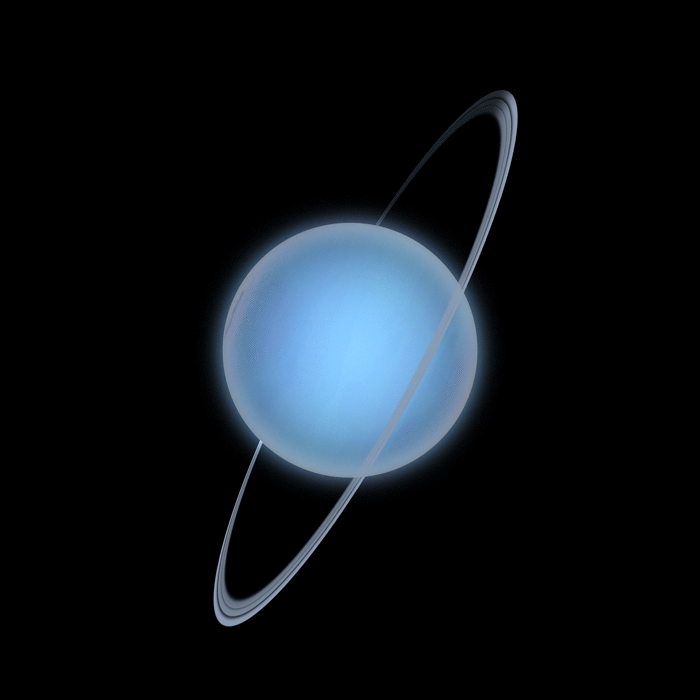

-Уран – наименее массивный из всех планет-гигантов Солнечной системы.
-Каждый полюс Урана 42 земных года находится в темноте, а следующие 42 года купается в солнечных лучах.
-При чистом темном небе Уран в противостоянии виден невооруженным глазом, а с биноклем его можно наблюдать даже в условиях города.
-Уран стал первой планетой, открытой с помощью телескопа.
-Уран – единственная большая планета Солнечной системы, название которой происходит не из римской, а из греческой мифологии.
-Спутниковая система Урана наименее массивна среди спутниковых систем газовых гигантов. Даже суммарная масса крупнейших пяти спутников не составит и половины массы Тритона, спутника Нептуна.
-Ученые экспериментально подтвердили, что на Нептуне и Уране небо в алмазах.